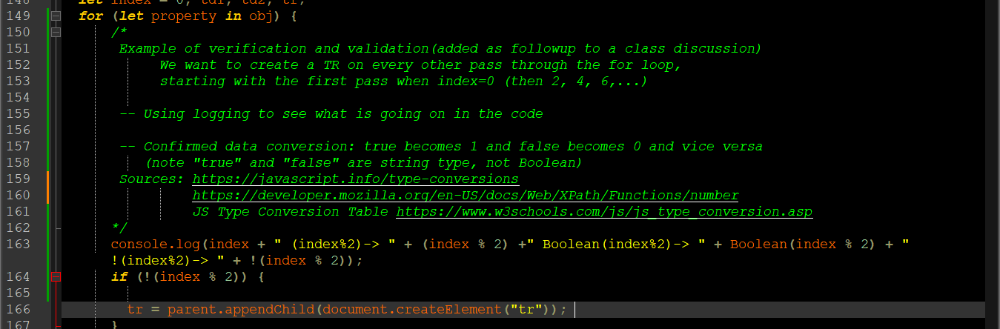
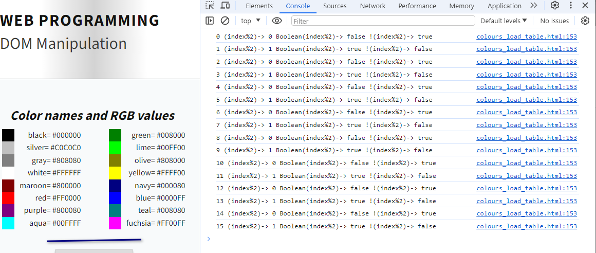

Prepare:
Review and catch up…
6.1. Followup to class discussion: Boolean objects and type conversion
- We want to create a TR on every other pass through the for loop,
starting with the first pass when index=0 (then 2, 4, 6,...) -
 Fig. 6.1. Using logging to verify the code performed as intended -
console.log(index + " (index%2)-> " + (index % 2) + " Boolean(index%2)-> " + Boolean(index % 2) + " !(index%2)-> " + !(index % 2)); if (!(index % 2)) { .. Fig. 6.2. Using logging to trace the behaviour of the code
6.2. Followup to class discussion: event listeners
- Removing event listeners
-
Fig. 6.3.
6.3. More on functions...
Source: javascript.info Arrow functions, the basics and Arrow functions revisited
- Function Declaration
- A global Function Declaration is visible in the whole script, no matter where it is.
- In strict mode, when a Function Declaration is within a code block, it’s visible everywhere inside that block. But not outside of it.
// Function Declaration function sum(a, b) { return a + b; }-
Fig. 6.3. - Function Expression
- A Function Expression is created when the execution reaches it and is usable only from that moment.
// Function Expression let sum = function(a, b) { return a + b; };- Arrow functions
- A very simple and concise syntax for creating functions, that’s often better than Function Expressions.
let sum = (a,b) => a + b;- is a shorter version of
let sum = function(a,b) { return a + b; };
Explore:
Read and try examples, make notes, add annotations to code, make connections…
6.4. JavaScript Object Notation (JSON)
- Explore Introducing JSON (www.json.org)
JSON is a lightweight, text-based, language-independent syntax for defining data interchange formats. It was derived from the ECMAScript programming language, but is programming language independent. JSON defines a small set of structuring rules for the portable representation of structured data.
ECMA-404 The JSON Data Interchange Standard- Complete MDN tutorial Working with JSON
- JSON structure, Arrays as JSON, JSON.parse() method, JSON.stringify() method
- Complete MDN tutorial Introducing asynchronous JavaScript
- Asynchronous programming is a technique that enables your program to start a potentially long-running task and still be able to be responsive to other events while that task runs, rather than having to wait until that task has finished. Once that task has finished, your program is presented with the result.
- Review event handlers and callbacks
- Complete MDN tutorial How to use promises
- Using the fetch() API, chaining promises, catching errors, promise terminology, combining multiple promises, async and await
- More tutorials on javascript.info (The Modern JavaScript Tutorial project)